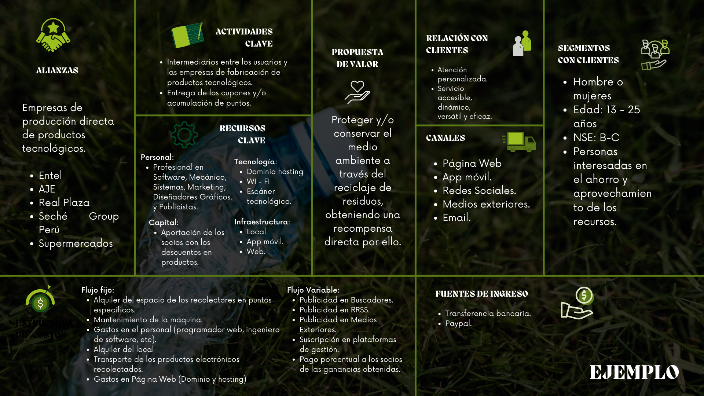
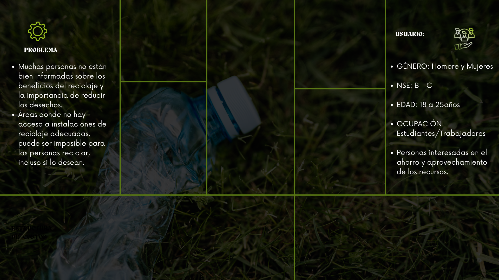
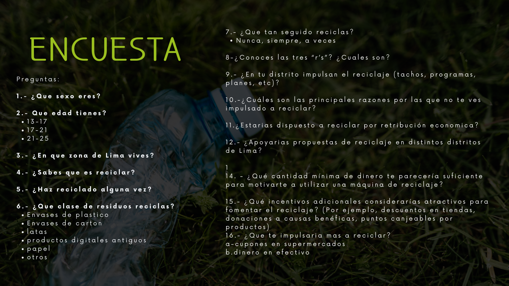

Introducción
En este proyecto, nos proponemos elegir un ODS, identificar una problemática asociada y llevar a cabo investigaciones, incluyendo encuestas, con el objetivo de encontrar soluciones. Buscamos impulsar un impacto positivo en nuestra comunidad y contribuir al avance hacia un mundo más sostenible.
1.- ODS
Vida de ecosistemas terrestres
Este objetivo se enfoca en la conservación y el uso sostenible de los ecosistemas terrestres, incluyendo la gestión sostenible de los recursos naturales para garantizar un ambiente saludable para las generaciones presentes y futuras.
2.- Problemática
Falta de reciclaje en el Perú
En Perú, se registra una producción diaria de 21 mil toneladas de residuos, lo que equivale a una generación promedio de 0.8 kg de desechos por ciudadano al día, según datos proporcionados por el Ministerio del Ambiente (Minam). Sin embargo, lamentablemente, solo se logra reciclar un ínfimo 1.8% de esta enorme cantidad de desechos. Por otro lado, el 70% de las personas que viven en la localidad de Lima no tienen suficiente información sobre los productos que pueden reciclar debido a la falta de información y el interés de los ciudadanos.3.- Investigación y Análisis
Este objetivo se enfoca en la conservación y el uso sostenible de los ecosistemas terrestres, incluyendo la gestión sostenible de los recursos naturales para garantizar un ambiente saludable para las generaciones presentes y futuras.
Modelo Canvas
 4.- Encuesta
Pregunta encuestas
5.- Soluciones
- Crear tachos inteligentes, mediran y cálcularan el valor en soles de lo reciclado. Esta información se mostrará en la aplicación móvil que permitirá llevar un registro y control de cuánto estás ayudando.
- Aplicación de seguimiento de reciclaje: Desarrollar una aplicación móvil que permita a los ciudadanos encontrar puntos de reciclaje cercanos, conocer los horarios de recolección de residuos y recibir recordatorios para separar sus materiales reciclables.
- Juegos educativos sobre reciclaje: Crear un juego móvil en línea que enseñe a los jugadores sobre la importancia del reciclaje y cómo clasificar adecuadamente los materiales. Los juegos pueden incluir desafíos y recompensas virtuales.
- Sistemas de recompensas digitales por reciclaje: Colaborar con empresas locales para crear programas de recompensas digitales por reciclaje. Los usuarios pueden ganar puntos o descuentos al reciclar materiales, que luego pueden canjear en tiendas locales o restaurantes.